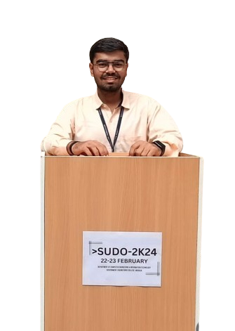

About Me
I am a passionate creator with a love for coding, drawing, and photography. Ever since I can remember, I've
been immersed in the world of creativity, finding joy in every project I undertake. Whether it's writing
elegant lines of code, bringing characters to life on paper, or capturing moments through the lens of my
camera, I thrive on the endless possibilities of expression.

- Hello, I'm Makwana Vraj, currently pursuing Computer Engineering at GEC Modasa, where I'm deeply
engaged in exploring the dynamic world of technology.
- Originally from Anand, I've always been fascinated by the ever-evolving landscape of technology.
This passion led me to pursue a degree in Computer Engineering, where I'm gaining invaluable
insights and practical skills to navigate the digital age.
- At GEC Modasa, I'm immersed in a rigorous curriculum that covers a spectrum of topics in computer
engineering. From foundational principles to advanced concepts, I'm actively honing my skills to
become a proficient technologist.
- I possess a diverse skill set that spans both front-end and back-end development. Proficient in
HTML, CSS, and JavaScript, I enjoy crafting visually appealing and user-friendly websites. On the
back-end, I'm adept at Java programming, with hands-on experience in technologies like Servlets,
JSP, and Spring. Additionally, my knowledge of SQL enables me to effectively manage databases and
retrieve insights from data.
- Coding is not just a profession for me; it's a passion. I find immense joy in solving complex
problems and bringing innovative ideas to life through programming. Furthermore, I have a keen
interest in web design, constantly exploring new trends and techniques to create engaging user
experiences.
HTML , CSS , JAVASCRIPT
I possess a strong command of the fundamental building blocks of web development: HTML, CSS, and JavaScript. These core technologies form the backbone of modern web design and enable me to create dynamic, interactive, and visually appealing websites and applications.
Server Side Programming
I possess comprehensive expertise in developing robust, scalable, and efficient web applications using Java Spring Boot and MongoDB. These technologies form a powerful stack for building modern, data-driven solutions that deliver exceptional performance, reliability, and flexibility.
Photography
Photography allows me to capture fleeting moments and preserve them for eternity. Through my lens, I seek to
evoke emotions, provoke thought, and showcase the beauty of the world around us. From breathtaking
landscapes to intimate portraits, my photography is a reflection of my curiosity and appreciation for life's
wonders.
My photography is an extension of my soul, reflecting my deep connection to the world around me. Through my lens, I strive to capture the beauty in the mundane, the magic in the ordinary, and the emotions that linger in the air. Each photograph is a testament to my personal vision and a window into my inner world.